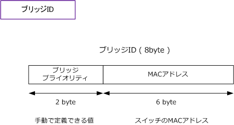
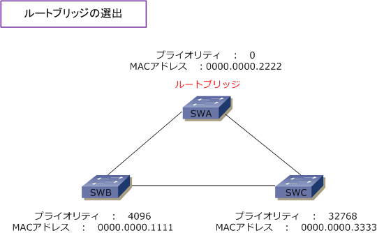
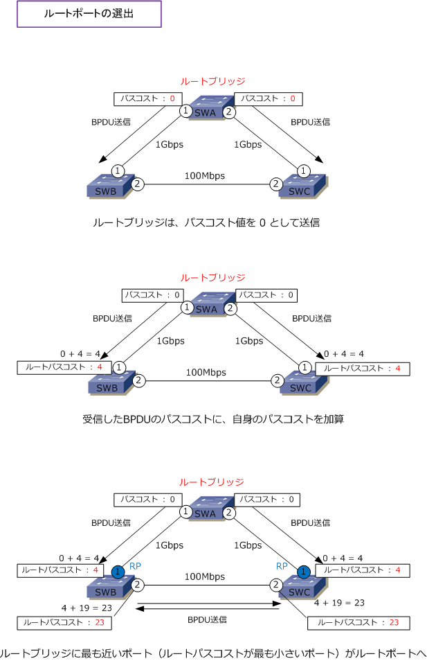
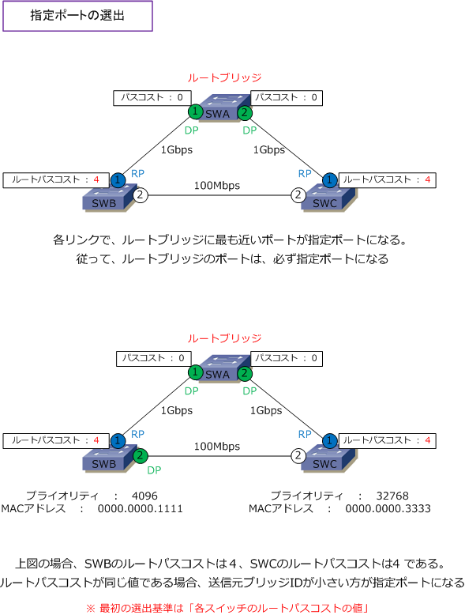
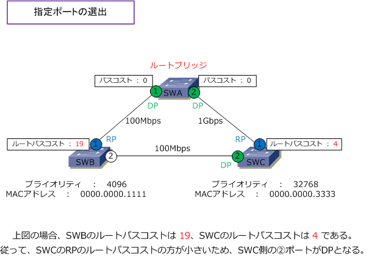
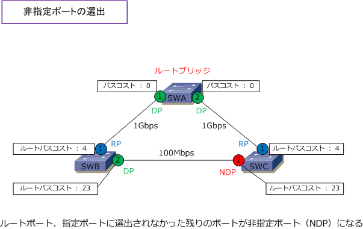
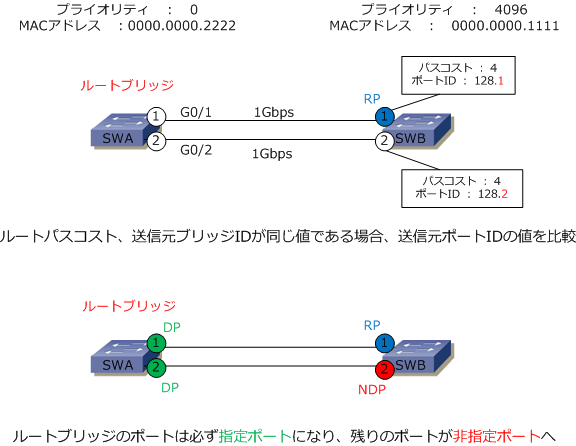

STP - Root Bridge / Root | Designated | Blocking Port
スパニングツリープロトコルの動作 ?@ ルートブリッジの選出
スパニングツリーでは、スイッチネットワークのループ構成をツリー状にするために、ツリー状の中心となる ルートブリッジを先ず始めに選出します。ルートブリッジにはブリッジIDが最も小さなスイッチが選ばれます。

先ず、スパニングツリーが有効なスイッチはBPDUを送信します。そのBPDUにはブリッジIDの情報が入って います。各スイッチは、隣接スイッチから受信したBPDUのブリッジIDと自身のブリッジIDを比較し合います。 ブリッジIDを比較する際に、先ずブリッジプライオリティ値を比較して、この値が同じ場合にはMACアドレス を比較します。従って下図の場合、ブリッジプライオリティ値が最も小さいSWAがルートブリッジとなります。

スパニングツリープロトコルの動作 ?A ルートポート（RP）の選出
スパニングツリーではルートブリッジの選出後、ルートポートと呼ばれるポートを選出することになります。 ルートポートは、ルートブリッジに最も近いポートです。非ルートブリッジごとに１ポートがルートポートに なります。何をもって最も近いかですが、それは「 ルートブリッジに至るパスコストが最も小さいこと 」を 指します。ルートブリッジに至るパスコストの合計値の事をルートパスコストと言います。下図を解説します。
ルートブリッジはパスコスト 0 でBPDUを送信します。非ルートブリッジのSWBとSWCのポート?@では受信 したBPDUのパスコストに自身のコスト値 4 を加算するので、SWBとSWCのポート?@のルートパスコストは 4 となります。次にSWBとSWCもBPDUを送信し合い、受信したBPDUのパスコストに自身のコスト値 19 を 加算するので、SWBとSWCのポート?Aのルートパスコストは 23 。ルートポートは非ルートブリッジごとに 1ポートずつ選出されるので、SWBではポート?@がRPになります。そしてSWCではポート?@がRPになります。

| 帯域幅 | コスト値（ IEEE改定後 ） | コスト値（IEEE改定前） |
|---|---|---|
| 10Gbps | 2 | 1 |
| 1Gbps | 4 | 1 |
| 100Mbps | 19 | 10 |
| 10Mbps | 100 | 100 |
スパニングツリープロトコルの動作 ?B 指定ポート（DP）の選出
スパニングツリーでは、ルートブリッジを選出して、ルートポートを選出した後は指定ポートを選出します。 指定ポートは各リンク（セグメント）でルートブリッジに最も近いポートです。以下は指定ポート選出ルール。
○ 各リンクごとに1ポートが指定ポートになります。 ○ ルートブリッジの全てのポートは必ず指定ポートになります。 ○ 指定ポートは「最も小さいルートパスコストのRPを持つスイッチ側のポート」が指定ポートになります。
下図では、SWA⇔SWB、SWA⇔SWC、SWB⇔SWCの3つのリンク（セグメント）があります。各リンク毎に 指定ポート（DP）が選出されます。ルートブリッジの全ポートはパスコストが 0 なので指定ポートになります。
次に、SWB ⇔ SWC間の指定ポート（ DP ）の選出ですが、各スイッチのRPのルートパスコストを見るので SWBのルートパスコストは 4、SWCのルートパスコストは 4 であることから、ルートパスコストは同じです。 ルートパスコストが同じ場合には、送信元ブリッジIDの値を比較します。送信元ブリッジIDが最も小さい値の ポートが指定ポートになります。SWBの方がブリッジID小さいことからそのポート?Aが指定ポートになります。

ちなみに、指定ポート（DP）を決定する際に、先ず各スイッチのルートパスコストの値を見るので、例えば SWBのルートパスコストが 19 で、SWCのルートパスコストが 4 である場合、SWB ⇔ SWC間ではSWCの ?Aポートが指定ポートになります。

スパニングツリープロトコルの動作 ?C 非指定ポート（NDP）の選出
ルートポート、指定ポートにも選出されなかった残りのポートが非指定ポートになります。非指定ポートでは データフレームが送受信されない（BPDUは受信する）ブロッキング状態になり、これでループを回避します。

スパニングツリーの各ポートの役割
スパニングツリーではルートポート、指定ポート、非指定ポートの3種類あります。役割は以下の通りです。
| ポートの種類 | ステータス | 説明 ( STPでは常に小さい値が強い ) |
|---|---|---|
| ルートポート | Forwarding | RP (Root Port)。非ルートブリッジごとに１ポート選出される、ルートブリッジに最も近いポート。 ?@ 各ポートのルートパスコスト ?A 送信元ブリッジID ?B 送信元ポートID、の順で比較。 |
| 指定ポート | Forwarding | DP (Designated Port)。各リンクごとに１ポート選出される、ルートブリッジに最も近いポート。 ?@ 各スイッチのRPのルートパスコスト ?A 送信元ブリッジID ?B 送信元ポートIDの順で比較。 |
| 非指定ポート | Blocking | NDP (Non Designated Port )。ルートポートと指定ポートに選出されなかったポート。これが ブロッキングポートである。このポートはデータを送受信できない状態になりループを回避する。 |
どのようなL2接続構成であってもスパニングツリーの構成は、?@ルートブリッジの選出、?Aルートポートの選出 ?B指定ポートの選出、?C非指定ポートの選出の順番で考えていきます。下図のスイッチでは、プライオリティ値 が小さいSWAがルートブリッジになります。次にルートポートの選出です。2つのリンクの帯域幅が同じなので ルートパスコストは同じになります。そして、同じスイッチなので送信元ブリッジIDも同じになります。すると 次の選定基準の送信元ポートIDを見ます。送信元ポートIDはポートプライオリティ+ポート番号で構成されます。
先ずポートプライオリティ値を見ます。デフォルトで全ポートのプライオリティ値は128なので次にポート番号 を見ます。G0/1とG0/2とではG0/1の方が小さいです。従ってルートポートはG0/1となります。次に、SWAは ルートブリッジなので全てのポートが指定ポートになります。そして、残りのポートが非指定ポートとなります。

色々な解説を行いましたが以下の3点を理解しておけばどのようなL2トポロジーでもSTP状態が分かります。
STPツリーは「 ルートブリッジの選出 ⇒ ルートポートの選出 ⇒ 指定ポートの選出 ⇒ 非指定ポートの選出 」のフローで決定。
1、ルートブリッジは、ブリッジID（ ブリッジプライオリティ + MACアドレス ）が最も小さい値を持つスイッチが選出される。 2、ルートポートは、?@各ポートのルートパスコスト ?A送信元ブリッジID ?B送信元ポートID の順で最も小さい値を持つポート。 3、指定ポートは、?@各スイッチのRPのルートパスコスト ?A送信元ブリッジID ?B送信元ポートID の順で最も小さい値を持つポート。
ルートポートは最上位のBPDUを受信するポート、指定ポートは最上位のBPDUを送信するポートとなります。 この「最上位のBPDU」は「最良のBPDU」とも呼ばれています。英語における「 best BPDU 」と翻訳です。